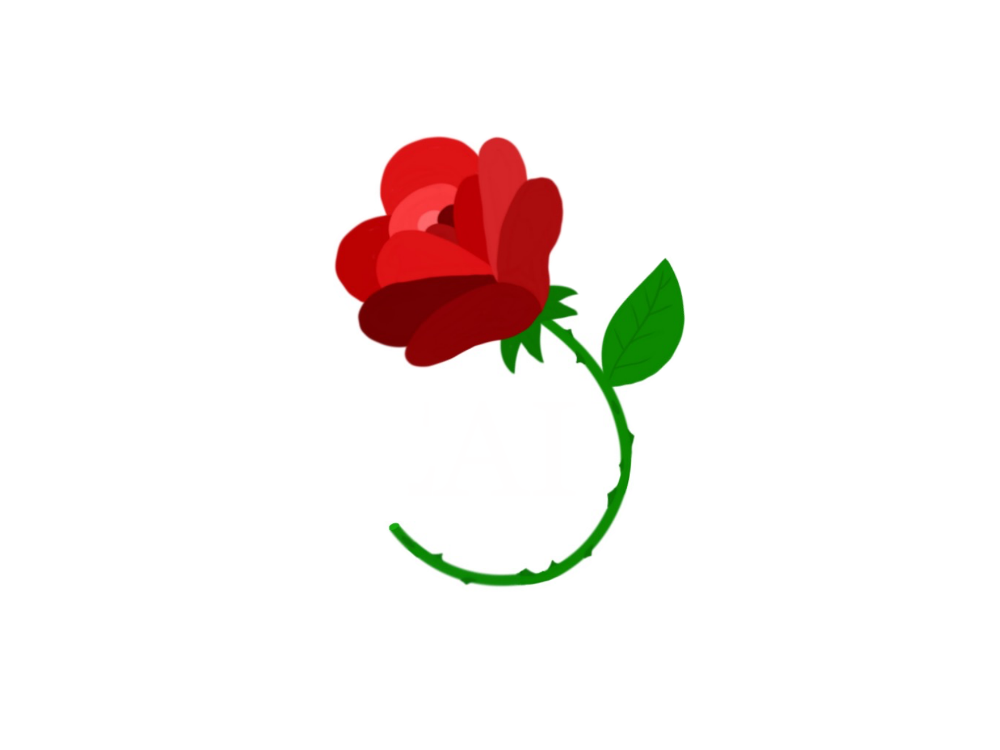

Sigma Alpha Iota, International Music Fraternity, is a Greek music fraternity for women.
It was created to help foster interest in music and to promote contact among people with an interest in music.
SAI has over 320 collegiate and alumnae chapters all over the United States.
Sigma Alpha Iota was founded on June 12, 1903, at the University School Of Music in Ann Arbor, Michigan.
These were the founders:

Mary Storrs Andersen
Elizabeth Campbell
Frances Caspari
Minnie Davis Sherrill
Nora Crane Hunt
Leila Farlin-Laughlin
Georgina Potts
PURPOSE
These statements form the backbone of what Sigma Alpha Iota follows at all times.
To form chapters of women college students and
alumnae who have a sincere interest in music
To uphold the highest standards of music
To further the development of music in America
and throughout the world
To give inspiration and encouragement to
members
To organize the cultural life of Sigma Alpha
Iota members as a contributing factor to their educational growth
To support the ideals and goals of the member's
Alma Mater
To adhere to the highest standards of
citizenship in school, community, and fraternity life
Validate HTML
Validate CSS